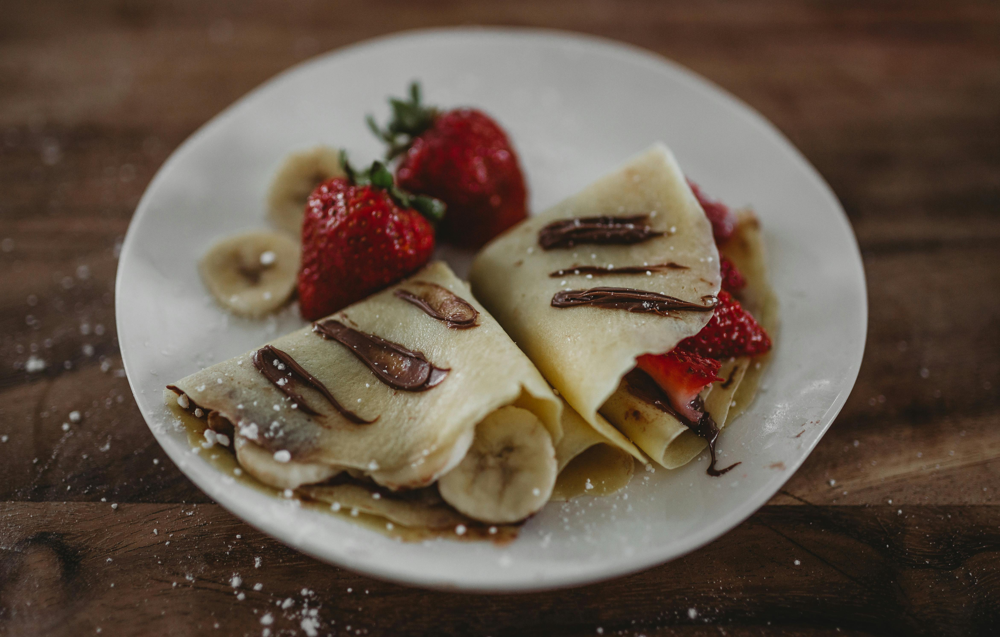

Basic Crepes

This simple but delicious crêpe recipe can be made in
minutes from ingredients that everyone has on hand.
Ingredients
- 2 Large Eggs
- 1/2c Milk
- 1/2c Water
- 1/4tsp Salt
- 1c All-Purpose Flour
- 2Tbsp Butter (melted)
Steps
- Gather all ingredients
- Whisk eggs, milk, water, and salt together in a
large mixing bowl; add flour and butter and Whisk
vigorously until smooth
- Heat a lightly oiled griddle or frying pan over
medium-high heat. Pour or scoop the batter
onto the pan, using approximately 1/4 cup for each crêpe.
Tilt the pan with a circular motion so that the
batter coats the surface evenly.
- Cook until the top of the crêpe is no longer wet and
the bottom has turned light
brown, 1 to 2 minutes. Run a spatula around the edge of the
skillet to loosen the crêpe; flip and cook until the other
side has turned light brown, about 1 minute more.
- Serve hot. Enjoy!
Home